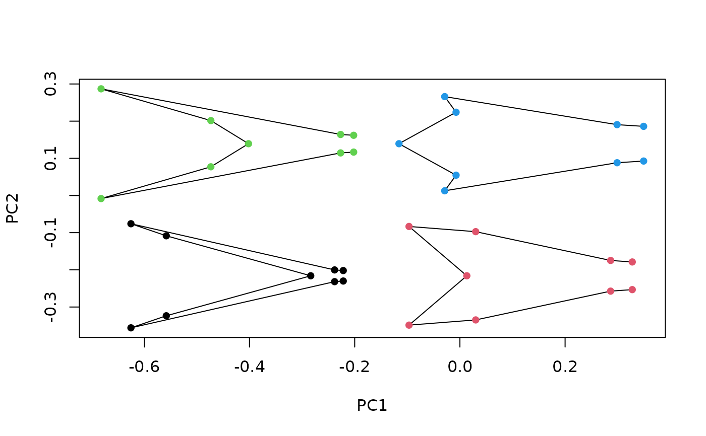

Plot the output from morphogrid(), for 2-dimensional morphometric
data. Used internally.
plot_morphogrid2d(
x = NULL,
y = NULL,
morphogrid,
template = NULL,
links = NULL,
datype,
ordtype,
axes,
adj_frame = c(1, 1),
p,
xlab = NULL,
ylab = NULL,
cex.ldm,
col.ldm,
col.models,
lwd.models,
bg.models,
plot = TRUE
)Optional vector with a non-morphometric variable to be plotted in the x axis.
Optional vector with a non-morphometric variable to be plotted in the y axis.
An object containing the output of morphogrid.
A 2-column matrix containing landmarks/semilandmarks followed
by coordinates defining a curve or set of curves describing additional aspects
of morphology, which will be warped using TPS interpolation to produce the set
of background shell models(see build_template2d).
A list with the indices of the coordinates defining the
wireframe (following the format used in Morpho).
Character; type of shape data used ("landm" or
"fcoef").
Character; method used for multivariate ordination
("prcomp", "bg_prcomp", "phy_prcomp", "pls_shapes"
or "phy_pls_shapes").
Numeric of length 2, indicating the axes to be plotted.
Numeric of length 2, providing a posteriori scaling factors for the width and height of the frame, respectively.
Numeric, indicating the number of landmarks/semilandmarks used (for landmark data only).
Standard arguments passed to the generic plot function.
Numeric; size of landmarks/semilandmarks in the background models.
The color of landmarks/semilandmarks in the background models.
The color for wireframes/outlines.
Numeric; the width of the lines in wireframes/outlines.
Background color for outlines.
Logical; whether to plot morphospace.
#load data and packages
library(geomorph)
data("tails")
#perform pca on tails shapes
pca <- prcomp(two.d.array(tails$shapes))
#generate grid of shape models sampling the range of variation
#at 4 locations (the 4 corners of the scatterplot)
shapes_grid <- morphogrid(ordination = pca, axes = c(1,2), datype = "landm",
k = ncol(tails$shapes), p = nrow(tails$shapes),
nh = 2, nv = 2)
#plot grid
plot_morphogrid2d(morphogrid = shapes_grid, links = tails$links,
datype = "landm", ordtype = "prcomp",
axes = c(1,2), p = 9, col.ldm = 1, cex.ldm = 1,
col.models = 1, lwd.models = 1)
#project each shape in models_arr
points(shapes_grid$models_arr[,,1], pch=16, col = 1)
points(shapes_grid$models_arr[,,2], pch=16, col = 2)
points(shapes_grid$models_arr[,,3], pch=16, col = 3)
points(shapes_grid$models_arr[,,4], pch=16, col = 4)
